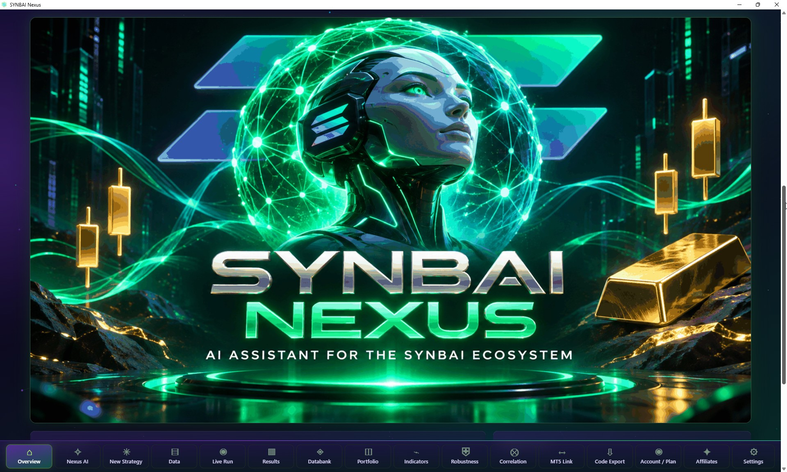
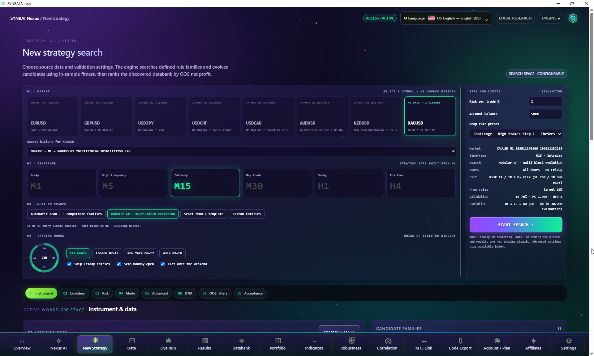
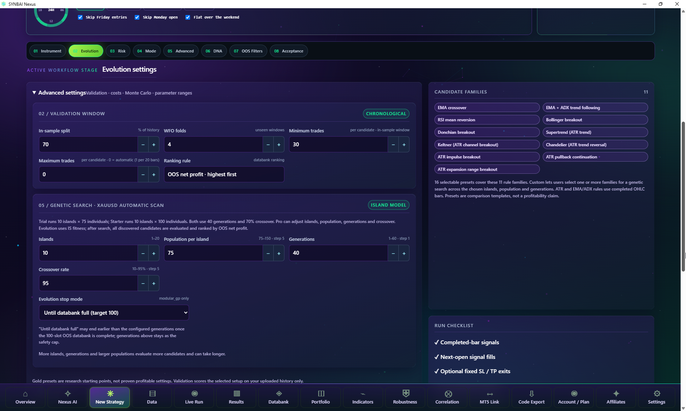
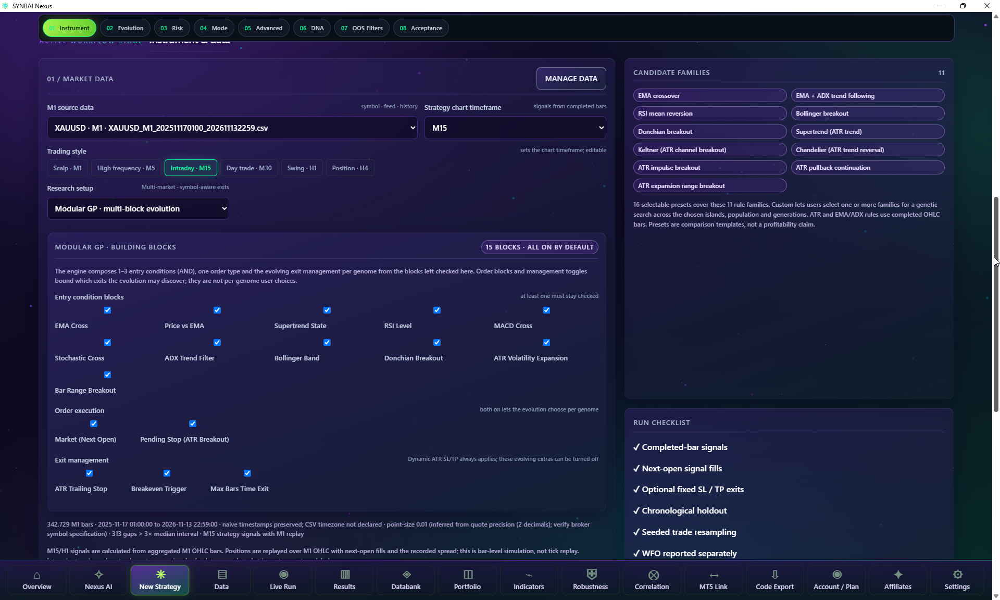
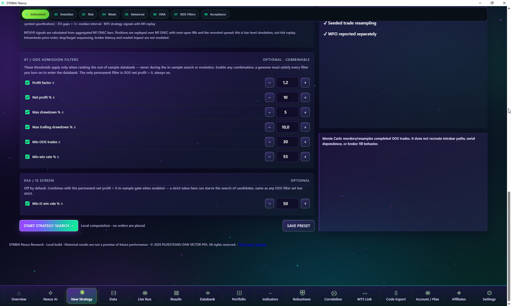

Bring your MT5 history
Import historical OHLC data from MetaTrader 5 or begin with the included sample history. Review timestamps, data gaps and market-cost assumptions before running a study.
CSV · OHLC · LOCAL DATAMT5 strategy research · XAUUSD focus
SYNBAI Nexus is a desktop research lab for traders who want to examine a trading idea against historical market data before taking it any further.

A clearer way to investigate an idea
Move from a market-history file to a reviewable research candidate. See the assumptions, costs and validation steps that shape each result.
Import historical OHLC data from MetaTrader 5 or begin with the included sample history. Review timestamps, data gaps and market-cost assumptions before running a study.
CSV · OHLC · LOCAL DATAExplore strategy families built around trend, momentum, mean reversion and volatility. Use a guided starting point or adjust research ranges when you need more control.
RULE FAMILIES · PARAMETERSCompare candidate selection results with separate holdout and robustness views. Keep the historical study as a research artifact you can revisit and question.
HOLDOUT · WALK-FORWARD · MONTE CARLO
A repeatable workflow
Select the symbol, source file and strategy timeframe. The app keeps the chosen history and its assumptions visible throughout the run.
Set the research style, rule families, trading hours and risk framework before a candidate is generated.
Review the entry, execution and exit components available to the evolutionary search instead of treating the result as a black box.
Choose OOS admission criteria, then preserve the configuration with the completed research record.
Evidence, with limits made visible
Historical simulation can help compare hypotheses. It cannot reproduce every live-market condition, guarantee broker fills or predict future performance.
Candidate ranking uses an in-sample segment; the selected specification is then evaluated against a later holdout segment.
Anchored and rolling evaluations give separate views of how a candidate behaves across repeated historical windows.
Resampling completed out-of-sample trades explores result sensitivity. It is not a forecast, tick replay or substitute for live execution testing.
Spread, commission, slippage, point size, timestamps and observed gaps are part of the research record. Unknown source details should stay unknown.
Evolution settings
Set the historical validation window, number of islands, population per island, generations and crossover rate. The controls make the evolutionary search reproducible and let you match its breadth to the research question.
“Until databank full” can finish early once the target number of OOS-ranked candidates is reached; the configured generations remain the safety ceiling.
See the research controls
Inside SYNBAI Nexus
Inspect the exact candidate building blocks and out-of-sample criteria that govern discovery. The application keeps these choices visible so the research process can be repeated, challenged and compared later.

Enable or disable entry conditions, order execution methods and exit-management blocks. Candidate-family presets describe the rule structures the engine may combine; they are research templates, not profitability claims.

Apply optional thresholds for profit factor, net profit, drawdown, trade count and win rate after the in-sample search. These filters rank historical candidates; they do not predict future performance.
Built for careful MT5 research
Bring your own MetaTrader 5 historical CSV. Inspect data quality, observed gaps and inferred symbol details so a clean-looking chart does not hide a flawed input.
Explore documented rule families including moving-average trend, RSI mean reversion, Bollinger and Donchian breakouts, Supertrend and ATR-based approaches.
Keep research runs, data metadata, selected parameters and validation summaries available on your computer for later comparison.
The application can produce MQL5 source for further review. Exported code must be compiled, checked in MetaEditor and tested separately before any use.
Research software is not a trading service. SYNBAI Nexus performs historical analysis; it does not place live trades. Historical returns are not account-currency profit forecasts or evidence of future results.
Frequently asked questions
SYNBAI FX is the public product and research-information site for SYNBAI Nexus, a Windows desktop application focused on historical strategy research for MT5 data, with an initial emphasis on XAUUSD.
No. Backtests, holdout periods, walk-forward analysis and Monte Carlo summaries describe selected historical data and assumptions. They cannot guarantee future performance, execution quality or a payout.
The product is designed for historical data research and read-only MT5 pairing/import. It does not place trades. Confirm all connection and account behavior in the current product before use.
Exported source is a starting point for technical review. It must be compiled and separately validated in MetaEditor and in an appropriate test environment before use. Source export is not proof of correctness or suitability.
No live scan or signal service is represented here. The neural market-flow concepts shown describe a separate documented prototype data model. Availability of any future AI or live-data features will be stated explicitly when implemented.
Commercial release, pricing and distribution details are not published here yet. Follow the official SYNBAI Nexus account for product updates.
Trading foreign exchange, CFDs and other leveraged products involves substantial risk and may not be suitable for every investor. Historical simulation has limitations, including data quality, spread, slippage, liquidity, latency and model-selection bias. This website is informational and does not provide financial advice.
Windows desktop · official distribution
We are preparing the MSIX package and Store submission. The install button will lead directly to Microsoft's official listing after certification.
Store release in preparation
SYNBAI FX · FXSYNBAI.EU
Start with the data. Keep the assumptions visible. Make the final decision yourself.